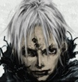

Forums galactiques > Taverne galactique : lieu de discussion informel > jeu HRP 2
Pages : 1 2 ... 20 21 22 ... 25 26
| Alfa3 Réputation à la taverne : 2  04/02 ETU 13:37 | Score : 0 Détails Dans une cafétéria gérée par un alcoolique notoire qui ne pouvait dormir sans taper des pieds, un molusque mangeait un monton, et grignotai, tranquilement dans son coin,une salade. Lorsque un escargot arriva, il lui dit :salut, passes moi le sel !
-Non -Pourquoi -J'ai faim -Prend ca dans ta figure et la, l'escargot sort un bazooka a tomates et tir dans le nez du molusque (?!) Celui ci riposte et arrache le bazooka. Il assome l'esgargot d'un revers de bazzoka splendide. Surgit alors un gendarme nain soul déguisé en canadien qui dit: vous l'avez foutu ou le sel ? -dans ton porte-feuille de combat ! -tu te fous de ma geule ? -oui Le gendarme alors sortit de sa fausse poche sur le coté de son pantalon en peau de crocodile méxicain un biberon remplit delailait qui peut exploser si il y a de la nitro dedans et il y en avait boum le mouton, qui en avait profité pour filer,se cassa une patte en fracture irreparrablE. Ce mouton n'avait jamais eu de chance dans sa vie. Il avait tout d'abord vécu à Pauvrecity (ville qui est introuvable sur aucune cartes!) Et après, le mouton, dans son adolescence fait un bond sur le coté et tombe par le fenêtre, ce qui entraîne sa mort Un génie arriva et dit: -C'est ou moscou -a l'est -C'est où l'est ? -Dans l'Asie -C'est ou ce trou perdu -Au pôle nord ... -Mais c'est ou ? -qu'est ce que ca peu te faire le génié s'énerva,il lanca un sort qui... detruisit l'asie entiere Pourquoi | ||
| DarthEry Réputation à la taverne : 20  04/02 ETU 14:27 | Score : 0 Détails Dans une cafétéria gérée par un alcoolique notoire qui ne pouvait dormir sans taper des pieds, un molusque mangeait un monton, et grignotai, tranquilement dans son coin,une salade. Lorsque un escargot arriva, il lui dit :salut, passes moi le sel !
-Non -Pourquoi -J'ai faim -Prend ca dans ta figure et la, l'escargot sort un bazooka a tomates et tir dans le nez du molusque (?!) Celui ci riposte et arrache le bazooka. Il assome l'esgargot d'un revers de bazzoka splendide. Surgit alors un gendarme nain soul déguisé en canadien qui dit: vous l'avez foutu ou le sel ? -dans ton porte-feuille de combat ! -tu te fous de ma geule ? -oui Le gendarme alors sortit de sa fausse poche sur le coté de son pantalon en peau de crocodile méxicain un biberon remplit delailait qui peut exploser si il y a de la nitro dedans et il y en avait boum le mouton, qui en avait profité pour filer,se cassa une patte en fracture irreparrablE. Ce mouton n'avait jamais eu de chance dans sa vie. Il avait tout d'abord vécu à Pauvrecity (ville qui est introuvable sur aucune cartes!) Et après, le mouton, dans son adolescence fait un bond sur le coté et tombe par le fenêtre, ce qui entraîne sa mort Un génie arriva et dit: -C'est ou moscou -a l'est -C'est où l'est ? -Dans l'Asie -C'est ou ce trou perdu -Au pôle nord ... -Mais c'est ou ? -qu'est ce que ca peu te faire le génié s'énerva,il lanca un sort qui... detruisit l'asie entiere Pourquoi ? s'écria le tavernier qui | ||
| Madame Démocratie Réputation à la taverne : 47  04/02 ETU 14:28 | Score : 0 Détails Dans une cafétéria gérée par un alcoolique notoire qui ne pouvait dormir sans taper des pieds, un molusque mangeait un monton, et grignotai, tranquilement dans son coin,une salade. Lorsque un escargot arriva, il lui dit :salut, passes moi le sel !
-Non -Pourquoi -J'ai faim -Prend ca dans ta figure et la, l'escargot sort un bazooka a tomates et tir dans le nez du molusque (?!) Celui ci riposte et arrache le bazooka. Il assome l'esgargot d'un revers de bazzoka splendide. Surgit alors un gendarme nain soul déguisé en canadien qui dit: vous l'avez foutu ou le sel ? -dans ton porte-feuille de combat ! -tu te fous de ma geule ? -oui Le gendarme alors sortit de sa fausse poche sur le coté de son pantalon en peau de crocodile méxicain un biberon remplit delailait qui peut exploser si il y a de la nitro dedans et il y en avait boum le mouton, qui en avait profité pour filer,se cassa une patte en fracture irreparrablE. Ce mouton n'avait jamais eu de chance dans sa vie. Il avait tout d'abord vécu à Pauvrecity (ville qui est introuvable sur aucune cartes!) Et après, le mouton, dans son adolescence fait un bond sur le coté et tombe par le fenêtre, ce qui entraîne sa mort Un génie arriva et dit: -C'est ou moscou -a l'est -C'est où l'est ? -Dans l'Asie -C'est ou ce trou perdu -Au pôle nord ... -Mais c'est ou ? -qu'est ce que ca peu te faire le génié s'énerva,il lanca un sort qui... detruisit l'asie entiere Pourquoi ? s'écria le tavernier qui avait une taverne | ||
| DarthEry Réputation à la taverne : 20 04/02 ETU 14:28 | Score : 0 Détails Dans une cafétéria gérée par un alcoolique notoire qui ne pouvait dormir sans taper des pieds, un molusque mangeait un monton, et grignotai, tranquilement dans son coin,une salade. Lorsque un escargot arriva, il lui dit :salut, passes moi le sel !
-Non -Pourquoi -J'ai faim -Prend ca dans ta figure et la, l'escargot sort un bazooka a tomates et tir dans le nez du molusque (?!) Celui ci riposte et arrache le bazooka. Il assome l'esgargot d'un revers de bazzoka splendide. Surgit alors un gendarme nain soul déguisé en canadien qui dit: vous l'avez foutu ou le sel ? -dans ton porte-feuille de combat ! -tu te fous de ma geule ? -oui Le gendarme alors sortit de sa fausse poche sur le coté de son pantalon en peau de crocodile méxicain un biberon remplit delailait qui peut exploser si il y a de la nitro dedans et il y en avait boum le mouton, qui en avait profité pour filer,se cassa une patte en fracture irreparrablE. Ce mouton n'avait jamais eu de chance dans sa vie. Il avait tout d'abord vécu à Pauvrecity (ville qui est introuvable sur aucune cartes!) Et après, le mouton, dans son adolescence fait un bond sur le coté et tombe par le fenêtre, ce qui entraîne sa mort Un génie arriva et dit: -C'est ou moscou -a l'est -C'est où l'est ? -Dans l'Asie -C'est ou ce trou perdu -Au pôle nord ... -Mais c'est ou ? -qu'est ce que ca peu te faire le génié s'énerva,il lanca un sort qui... detruisit l'asie entiere Pourquoi ? s'écria le tavernier qui avait une taverne tout salopée par ces combats | ||
| kerry Réputation à la taverne : 0  04/02 ETU 14:51 | Score : 0 Détails Dans une cafétéria gérée par un alcoolique notoire qui ne pouvait dormir sans taper des pieds, un molusque mangeait un monton, et grignotai, tranquilement dans son coin,une salade. Lorsque un escargot arriva, il lui dit :salut, passes moi le sel !
-Non -Pourquoi -J'ai faim -Prend ca dans ta figure et la, l'escargot sort un bazooka a tomates et tir dans le nez du molusque (?!) Celui ci riposte et arrache le bazooka. Il assome l'esgargot d'un revers de bazzoka splendide. Surgit alors un gendarme nain soul déguisé en canadien qui dit: vous l'avez foutu ou le sel ? -dans ton porte-feuille de combat ! -tu te fous de ma geule ? -oui Le gendarme alors sortit de sa fausse poche sur le coté de son pantalon en peau de crocodile méxicain un biberon remplit delailait qui peut exploser si il y a de la nitro dedans et il y en avait boum le mouton, qui en avait profité pour filer,se cassa une patte en fracture irreparrablE. Ce mouton n'avait jamais eu de chance dans sa vie. Il avait tout d'abord vécu à Pauvrecity (ville qui est introuvable sur aucune cartes!) Et après, le mouton, dans son adolescence fait un bond sur le coté et tombe par le fenêtre, ce qui entraîne sa mort Un génie arriva et dit: -C'est ou moscou -a l'est -C'est où l'est ? -Dans l'Asie -C'est ou ce trou perdu -Au pôle nord ... -Mais c'est ou ? -qu'est ce que ca peu te faire le génié s'énerva,il lanca un sort qui... detruisit l'asie entiere Pourquoi ? s'écria le tavernier qui avait une taverne tout salopée par ces combats de sorciers bourés | ||
| Elenna Réputation à la taverne : 17  04/02 ETU 15:16 | Score : 0 Détails Dans une cafétéria gérée par un alcoolique notoire qui ne pouvait dormir sans taper des pieds, un molusque mangeait un monton, et grignotai, tranquilement dans son coin,une salade. Lorsque un escargot arriva, il lui dit :salut, passes moi le sel !
-Non -Pourquoi -J'ai faim -Prend ca dans ta figure et la, l'escargot sort un bazooka a tomates et tir dans le nez du molusque (?!) Celui ci riposte et arrache le bazooka. Il assome l'esgargot d'un revers de bazzoka splendide. Surgit alors un gendarme nain soul déguisé en canadien qui dit: vous l'avez foutu ou le sel ? -dans ton porte-feuille de combat ! -tu te fous de ma geule ? -oui Le gendarme alors sortit de sa fausse poche sur le coté de son pantalon en peau de crocodile méxicain un biberon remplit delailait qui peut exploser si il y a de la nitro dedans et il y en avait boum le mouton, qui en avait profité pour filer,se cassa une patte en fracture irreparrablE. Ce mouton n'avait jamais eu de chance dans sa vie. Il avait tout d'abord vécu à Pauvrecity (ville qui est introuvable sur aucune cartes!) Et après, le mouton, dans son adolescence fait un bond sur le coté et tombe par le fenêtre, ce qui entraîne sa mort Un génie arriva et dit: -C'est ou moscou -a l'est -C'est où l'est ? -Dans l'Asie -C'est ou ce trou perdu -Au pôle nord ... -Mais c'est ou ? -qu'est ce que ca peu te faire le génié s'énerva,il lanca un sort qui... detruisit l'asie entiere -Pourquoi ? s'écria le tavernier qui avait une taverne tout salopée par ces combats de sorciers bourés -Pourquoi pas | ||
| DarthEry Réputation à la taverne : 20 04/02 ETU 17:15 | Score : 0 Détails Dans une cafétéria gérée par un alcoolique notoire qui ne pouvait dormir sans taper des pieds, un molusque mangeait un monton, et grignotai, tranquilement dans son coin,une salade. Lorsque un escargot arriva, il lui dit :salut, passes moi le sel !
-Non -Pourquoi -J'ai faim -Prend ca dans ta figure et la, l'escargot sort un bazooka a tomates et tir dans le nez du molusque (?!) Celui ci riposte et arrache le bazooka. Il assome l'esgargot d'un revers de bazzoka splendide. Surgit alors un gendarme nain soul déguisé en canadien qui dit: vous l'avez foutu ou le sel ? -dans ton porte-feuille de combat ! -tu te fous de ma geule ? -oui Le gendarme alors sortit de sa fausse poche sur le coté de son pantalon en peau de crocodile méxicain un biberon remplit delailait qui peut exploser si il y a de la nitro dedans et il y en avait boum le mouton, qui en avait profité pour filer,se cassa une patte en fracture irreparrablE. Ce mouton n'avait jamais eu de chance dans sa vie. Il avait tout d'abord vécu à Pauvrecity (ville qui est introuvable sur aucune cartes!) Et après, le mouton, dans son adolescence fait un bond sur le coté et tombe par le fenêtre, ce qui entraîne sa mort Un génie arriva et dit: -C'est ou moscou -a l'est -C'est où l'est ? -Dans l'Asie -C'est ou ce trou perdu -Au pôle nord ... -Mais c'est ou ? -qu'est ce que ca peu te faire le génié s'énerva,il lanca un sort qui... detruisit l'asie entiere -Pourquoi ? s'écria le tavernier qui avait une taverne tout salopée par ces combats de sorciers bourés -Pourquoi pas s'écria un personage loup phoque (mi loup, mi phoque, et re mi loup derriere) | ||
| Elenna Réputation à la taverne : 17 04/02 ETU 17:47 | Score : 0 Détails Dans une cafétéria gérée par un alcoolique notoire qui ne pouvait dormir sans taper des pieds, un molusque mangeait un monton, et grignotai, tranquilement dans son coin,une salade. Lorsque un escargot arriva, il lui dit :salut, passes moi le sel !
-Non -Pourquoi -J'ai faim -Prend ca dans ta figure et la, l'escargot sort un bazooka a tomates et tir dans le nez du molusque (?!) Celui ci riposte et arrache le bazooka. Il assome l'esgargot d'un revers de bazzoka splendide. Surgit alors un gendarme nain soul déguisé en canadien qui dit: vous l'avez foutu ou le sel ? -dans ton porte-feuille de combat ! -tu te fous de ma geule ? -oui Le gendarme alors sortit de sa fausse poche sur le coté de son pantalon en peau de crocodile méxicain un biberon remplit delailait qui peut exploser si il y a de la nitro dedans et il y en avait boum le mouton, qui en avait profité pour filer,se cassa une patte en fracture irreparrablE. Ce mouton n'avait jamais eu de chance dans sa vie. Il avait tout d'abord vécu à Pauvrecity (ville qui est introuvable sur aucune cartes!) Et après, le mouton, dans son adolescence fait un bond sur le coté et tombe par le fenêtre, ce qui entraîne sa mort Un génie arriva et dit: -C'est ou moscou -a l'est -C'est où l'est ? -Dans l'Asie -C'est ou ce trou perdu -Au pôle nord ... -Mais c'est ou ? -qu'est ce que ca peu te faire le génié s'énerva,il lanca un sort qui... detruisit l'asie entiere -Pourquoi ? s'écria le tavernier qui avait une taverne tout salopée par ces combats de sorciers bourés -Pourquoi pas s'écria un personage loup phoque (mi loup, mi phoque, et re mi loup derriere) au nez rouge au yeux jaunes et cheveux verts | ||
| DarthEry Réputation à la taverne : 20 04/02 ETU 17:58 | Score : 0 Détails Dans une cafétéria gérée par un alcoolique notoire qui ne pouvait dormir sans taper des pieds, un molusque mangeait un monton, et grignotai, tranquilement dans son coin,une salade. Lorsque un escargot arriva, il lui dit :salut, passes moi le sel !
-Non -Pourquoi -J'ai faim -Prend ca dans ta figure et la, l'escargot sort un bazooka a tomates et tir dans le nez du molusque (?!) Celui ci riposte et arrache le bazooka. Il assome l'esgargot d'un revers de bazzoka splendide. Surgit alors un gendarme nain soul déguisé en canadien qui dit: vous l'avez foutu ou le sel ? -dans ton porte-feuille de combat ! -tu te fous de ma geule ? -oui Le gendarme alors sortit de sa fausse poche sur le coté de son pantalon en peau de crocodile méxicain un biberon remplit delailait qui peut exploser si il y a de la nitro dedans et il y en avait boum le mouton, qui en avait profité pour filer,se cassa une patte en fracture irreparrablE. Ce mouton n'avait jamais eu de chance dans sa vie. Il avait tout d'abord vécu à Pauvrecity (ville qui est introuvable sur aucune cartes!) Et après, le mouton, dans son adolescence fait un bond sur le coté et tombe par le fenêtre, ce qui entraîne sa mort Un génie arriva et dit: -C'est ou moscou -a l'est -C'est où l'est ? -Dans l'Asie -C'est ou ce trou perdu -Au pôle nord ... -Mais c'est ou ? -qu'est ce que ca peu te faire le génié s'énerva,il lanca un sort qui... detruisit l'asie entiere -Pourquoi ? s'écria le tavernier qui avait une taverne tout salopée par ces combats de sorciers bourés -Pourquoi pas s'écria un personage loup phoque (mi loup, mi phoque, et re mi loup derriere) au nez rouge au yeux jaunes et cheveux verts coiffé d'une casquette | ||
| Glokzy Zounourss Réputation à la taverne : 228  04/02 ETU 18:10 | Score : 0 Détails Dans une cafétéria gérée par un alcoolique notoire qui ne pouvait dormir sans taper des pieds, un molusque mangeait un monton, et grignotai, tranquilement dans son coin,une salade. Lorsque un escargot arriva, il lui dit :salut, passes moi le sel !
-Non -Pourquoi -J'ai faim -Prend ca dans ta figure et la, l'escargot sort un bazooka a tomates et tir dans le nez du molusque (?!) Celui ci riposte et arrache le bazooka. Il assome l'esgargot d'un revers de bazzoka splendide. Surgit alors un gendarme nain soul déguisé en canadien qui dit: vous l'avez foutu ou le sel ? -dans ton porte-feuille de combat ! -tu te fous de ma geule ? -oui Le gendarme alors sortit de sa fausse poche sur le coté de son pantalon en peau de crocodile méxicain un biberon remplit delailait qui peut exploser si il y a de la nitro dedans et il y en avait boum le mouton, qui en avait profité pour filer,se cassa une patte en fracture irreparrablE. Ce mouton n'avait jamais eu de chance dans sa vie. Il avait tout d'abord vécu à Pauvrecity (ville qui est introuvable sur aucune cartes!) Et après, le mouton, dans son adolescence fait un bond sur le coté et tombe par le fenêtre, ce qui entraîne sa mort Un génie arriva et dit: -C'est ou moscou -a l'est -C'est où l'est ? -Dans l'Asie -C'est ou ce trou perdu -Au pôle nord ... -Mais c'est ou ? -qu'est ce que ca peu te faire le génié s'énerva,il lanca un sort qui... detruisit l'asie entiere -Pourquoi ? s'écria le tavernier qui avait une taverne tout salopée par ces combats de sorciers bourés -Pourquoi pas s'écria un personage loup phoque (mi loup, mi phoque, et re mi loup derriere) au nez rouge au yeux jaunes et cheveux verts coiffé d'une casquette 59fifty bien trop grande pour son crâne atrophié | ||
| Baby_comdant Réputation à la taverne : 54  04/02 ETU 18:13 | Score : 0 Détails Dans une cafétéria gérée par un alcoolique notoire qui ne pouvait dormir sans taper des pieds, un molusque mangeait un monton, et grignotai, tranquilement dans son coin,une salade. Lorsque un escargot arriva, il lui dit :salut, passes moi le sel !
-Non -Pourquoi -J'ai faim -Prend ca dans ta figure et la, l'escargot sort un bazooka a tomates et tir dans le nez du molusque (?!) Celui ci riposte et arrache le bazooka. Il assome l'esgargot d'un revers de bazzoka splendide. Surgit alors un gendarme nain soul déguisé en canadien qui dit: vous l'avez foutu ou le sel ? -dans ton porte-feuille de combat ! -tu te fous de ma geule ? -oui Le gendarme alors sortit de sa fausse poche sur le coté de son pantalon en peau de crocodile méxicain un biberon remplit delailait qui peut exploser si il y a de la nitro dedans et il y en avait boum le mouton, qui en avait profité pour filer,se cassa une patte en fracture irreparrablE. Ce mouton n'avait jamais eu de chance dans sa vie. Il avait tout d'abord vécu à Pauvrecity (ville qui est introuvable sur aucune cartes!) Et après, le mouton, dans son adolescence fait un bond sur le coté et tombe par le fenêtre, ce qui entraîne sa mort Un génie arriva et dit: -C'est ou moscou -a l'est -C'est où l'est ? -Dans l'Asie -C'est ou ce trou perdu -Au pôle nord ... -Mais c'est ou ? -qu'est ce que ca peu te faire le génié s'énerva,il lanca un sort qui... detruisit l'asie entiere -Pourquoi ? s'écria le tavernier qui avait une taverne tout salopée par ces combats de sorciers bourés -Pourquoi pas s'écria un personage loup phoque (mi loup, mi phoque, et re mi loup derriere) au nez rouge au yeux jaunes et cheveux verts coiffé d'une casquette 59fifty bien trop grande pour son crâne atrophié _mais pourquoi pourquoi pas??? | ||
| Eliad Gadil Réputation à la taverne : 184  05/02 ETU 10:46 | Score : 0 Détails Dans une cafétéria gérée par un alcoolique notoire qui ne pouvait dormir sans taper des pieds, un molusque mangeait un monton, et grignotai, tranquilement dans son coin,une salade. Lorsque un escargot arriva, il lui dit :salut, passes moi le sel !
-Non -Pourquoi -J'ai faim -Prend ca dans ta figure et la, l'escargot sort un bazooka a tomates et tir dans le nez du molusque (?!) Celui ci riposte et arrache le bazooka. Il assome l'esgargot d'un revers de bazzoka splendide. Surgit alors un gendarme nain soul déguisé en canadien qui dit: vous l'avez foutu ou le sel ? -dans ton porte-feuille de combat ! -tu te fous de ma geule ? -oui Le gendarme alors sortit de sa fausse poche sur le coté de son pantalon en peau de crocodile méxicain un biberon remplit delailait qui peut exploser si il y a de la nitro dedans et il y en avait boum le mouton, qui en avait profité pour filer,se cassa une patte en fracture irreparrablE. Ce mouton n'avait jamais eu de chance dans sa vie. Il avait tout d'abord vécu à Pauvrecity (ville qui est introuvable sur aucune cartes!) Et après, le mouton, dans son adolescence fait un bond sur le coté et tombe par le fenêtre, ce qui entraîne sa mort Un génie arriva et dit: -C'est ou moscou -a l'est -C'est où l'est ? -Dans l'Asie -C'est ou ce trou perdu -Au pôle nord ... -Mais c'est ou ? -qu'est ce que ca peu te faire le génié s'énerva,il lanca un sort qui... detruisit l'asie entiere -Pourquoi ? s'écria le tavernier qui avait une taverne tout salopée par ces combats de sorciers bourés -Pourquoi pas s'écria un personage loup phoque (mi loup, mi phoque, et re mi loup derriere) au nez rouge au yeux jaunes et cheveux verts coiffé d'une casquette 59fifty bien trop grande pour son crâne atrophié _mais pourquoi pourquoi pas??? - mais parce-que !!! | ||
| Alfa3 Réputation à la taverne : 2 05/02 ETU 17:48 | Score : 0 Détails Dans une cafétéria gérée par un alcoolique notoire qui ne pouvait dormir sans taper des pieds, un molusque mangeait un monton, et grignotai, tranquilement dans son coin,une salade. Lorsque un escargot arriva, il lui dit :salut, passes moi le sel !
-Non -Pourquoi -J'ai faim -Prend ca dans ta figure et la, l'escargot sort un bazooka a tomates et tir dans le nez du molusque (?!) Celui ci riposte et arrache le bazooka. Il assome l'esgargot d'un revers de bazzoka splendide. Surgit alors un gendarme nain soul déguisé en canadien qui dit: vous l'avez foutu ou le sel ? -dans ton porte-feuille de combat ! -tu te fous de ma geule ? -oui Le gendarme alors sortit de sa fausse poche sur le coté de son pantalon en peau de crocodile méxicain un biberon remplit delailait qui peut exploser si il y a de la nitro dedans et il y en avait boum le mouton, qui en avait profité pour filer,se cassa une patte en fracture irreparrablE. Ce mouton n'avait jamais eu de chance dans sa vie. Il avait tout d'abord vécu à Pauvrecity (ville qui est introuvable sur aucune cartes!) Et après, le mouton, dans son adolescence fait un bond sur le coté et tombe par le fenêtre, ce qui entraîne sa mort Un génie arriva et dit: -C'est ou moscou -a l'est -C'est où l'est ? -Dans l'Asie -C'est ou ce trou perdu -Au pôle nord ... -Mais c'est ou ? -qu'est ce que ca peu te faire le génié s'énerva,il lanca un sort qui... detruisit l'asie entiere -Pourquoi ? s'écria le tavernier qui avait une taverne tout salopée par ces combats de sorciers bourés -Pourquoi pas s'écria un personage loup phoque (mi loup, mi phoque, et re mi loup derriere) au nez rouge au yeux jaunes et cheveux verts coiffé d'une casquette 59fifty bien trop grande pour son crâne atrophié _mais pourquoi pourquoi pas??? - mais parce-que !!!Bon, | ||
| DarthEry Réputation à la taverne : 20 05/02 ETU 17:49 | Score : 0 Détails Dans une cafétéria gérée par un alcoolique notoire qui ne pouvait dormir sans taper des pieds, un molusque mangeait un monton, et grignotai, tranquilement dans son coin,une salade. Lorsque un escargot arriva, il lui dit :salut, passes moi le sel !
-Non -Pourquoi -J'ai faim -Prend ca dans ta figure et la, l'escargot sort un bazooka a tomates et tir dans le nez du molusque (?!) Celui ci riposte et arrache le bazooka. Il assome l'esgargot d'un revers de bazzoka splendide. Surgit alors un gendarme nain soul déguisé en canadien qui dit: vous l'avez foutu ou le sel ? -dans ton porte-feuille de combat ! -tu te fous de ma geule ? -oui Le gendarme alors sortit de sa fausse poche sur le coté de son pantalon en peau de crocodile méxicain un biberon remplit delailait qui peut exploser si il y a de la nitro dedans et il y en avait boum le mouton, qui en avait profité pour filer,se cassa une patte en fracture irreparrablE. Ce mouton n'avait jamais eu de chance dans sa vie. Il avait tout d'abord vécu à Pauvrecity (ville qui est introuvable sur aucune cartes!) Et après, le mouton, dans son adolescence fait un bond sur le coté et tombe par le fenêtre, ce qui entraîne sa mort Un génie arriva et dit: -C'est ou moscou -a l'est -C'est où l'est ? -Dans l'Asie -C'est ou ce trou perdu -Au pôle nord ... -Mais c'est ou ? -qu'est ce que ca peu te faire le génié s'énerva,il lanca un sort qui... detruisit l'asie entiere -Pourquoi ? s'écria le tavernier qui avait une taverne tout salopée par ces combats de sorciers bourés -Pourquoi pas s'écria un personage loup phoque (mi loup, mi phoque, et re mi loup derriere) au nez rouge au yeux jaunes et cheveux verts coiffé d'une casquette 59fifty bien trop grande pour son crâne atrophié _mais pourquoi pourquoi pas??? - mais parce-que !!!Bon, va voir ailleur, rien ne te retient, | ||
| Alfa3 Réputation à la taverne : 2 05/02 ETU 17:49 | Score : 0 Détails Dans une cafétéria gérée par un alcoolique notoire qui ne pouvait dormir sans taper des pieds, un molusque mangeait un monton, et grignotai, tranquilement dans son coin,une salade. Lorsque un escargot arriva, il lui dit :salut, passes moi le sel !
-Non -Pourquoi -J'ai faim -Prend ca dans ta figure et la, l'escargot sort un bazooka a tomates et tir dans le nez du molusque (?!) Celui ci riposte et arrache le bazooka. Il assome l'esgargot d'un revers de bazzoka splendide. Surgit alors un gendarme nain soul déguisé en canadien qui dit: vous l'avez foutu ou le sel ? -dans ton porte-feuille de combat ! -tu te fous de ma geule ? -oui Le gendarme alors sortit de sa fausse poche sur le coté de son pantalon en peau de crocodile méxicain un biberon remplit delailait qui peut exploser si il y a de la nitro dedans et il y en avait boum le mouton, qui en avait profité pour filer,se cassa une patte en fracture irreparrablE. Ce mouton n'avait jamais eu de chance dans sa vie. Il avait tout d'abord vécu à Pauvrecity (ville qui est introuvable sur aucune cartes!) Et après, le mouton, dans son adolescence fait un bond sur le coté et tombe par le fenêtre, ce qui entraîne sa mort Un génie arriva et dit: -C'est ou moscou -a l'est -C'est où l'est ? -Dans l'Asie -C'est ou ce trou perdu -Au pôle nord ... -Mais c'est ou ? -qu'est ce que ca peu te faire le génié s'énerva,il lanca un sort qui... detruisit l'asie entiere -Pourquoi ? s'écria le tavernier qui avait une taverne tout salopée par ces combats de sorciers bourés -Pourquoi pas s'écria un personage loup phoque (mi loup, mi phoque, et re mi loup derriere) au nez rouge au yeux jaunes et cheveux verts coiffé d'une casquette 59fifty bien trop grande pour son crâne atrophié _mais pourquoi pourquoi pas??? - mais parce-que !!!Bon, va voir ailleur, rien ne te retient,j'espere | ||
| Madame Démocratie Réputation à la taverne : 47 05/02 ETU 18:00 | Score : 0 Détails Dans une cafétéria gérée par un alcoolique notoire qui ne pouvait dormir sans taper des pieds, un molusque mangeait un monton, et grignotai, tranquilement dans son coin,une salade. Lorsque un escargot arriva, il lui dit :salut, passes moi le sel !
-Non -Pourquoi -J'ai faim -Prend ca dans ta figure et la, l'escargot sort un bazooka a tomates et tir dans le nez du molusque (?!) Celui ci riposte et arrache le bazooka. Il assome l'esgargot d'un revers de bazzoka splendide. Surgit alors un gendarme nain soul déguisé en canadien qui dit: vous l'avez foutu ou le sel ? -dans ton porte-feuille de combat ! -tu te fous de ma geule ? -oui Le gendarme alors sortit de sa fausse poche sur le coté de son pantalon en peau de crocodile méxicain un biberon remplit delailait qui peut exploser si il y a de la nitro dedans et il y en avait boum le mouton, qui en avait profité pour filer,se cassa une patte en fracture irreparrablE. Ce mouton n'avait jamais eu de chance dans sa vie. Il avait tout d'abord vécu à Pauvrecity (ville qui est introuvable sur aucune cartes!) Et après, le mouton, dans son adolescence fait un bond sur le coté et tombe par le fenêtre, ce qui entraîne sa mort Un génie arriva et dit: -C'est ou moscou -a l'est -C'est où l'est ? -Dans l'Asie -C'est ou ce trou perdu -Au pôle nord ... -Mais c'est ou ? -qu'est ce que ca peu te faire le génié s'énerva,il lanca un sort qui... detruisit l'asie entiere -Pourquoi ? s'écria le tavernier qui avait une taverne tout salopée par ces combats de sorciers bourés -Pourquoi pas s'écria un personage loup phoque (mi loup, mi phoque, et re mi loup derriere) au nez rouge au yeux jaunes et cheveux verts coiffé d'une casquette 59fifty bien trop grande pour son crâne atrophié _mais pourquoi pourquoi pas??? - mais parce-que !!!Bon, va voir ailleur, rien ne te retient,j'espere parce que l'escargot ... | ||
| Alfa3 Réputation à la taverne : 2 05/02 ETU 18:04 | Score : 0 Détails Dans une cafétéria gérée par un alcoolique notoire qui ne pouvait dormir sans taper des pieds, un molusque mangeait un monton, et grignotai, tranquilement dans son coin,une salade. Lorsque un escargot arriva, il lui dit :salut, passes moi le sel !
-Non -Pourquoi -J'ai faim -Prend ca dans ta figure et la, l'escargot sort un bazooka a tomates et tir dans le nez du molusque (?!) Celui ci riposte et arrache le bazooka. Il assome l'esgargot d'un revers de bazzoka splendide. Surgit alors un gendarme nain soul déguisé en canadien qui dit: vous l'avez foutu ou le sel ? -dans ton porte-feuille de combat ! -tu te fous de ma geule ? -oui Le gendarme alors sortit de sa fausse poche sur le coté de son pantalon en peau de crocodile méxicain un biberon remplit delailait qui peut exploser si il y a de la nitro dedans et il y en avait boum le mouton, qui en avait profité pour filer,se cassa une patte en fracture irreparrablE. Ce mouton n'avait jamais eu de chance dans sa vie. Il avait tout d'abord vécu à Pauvrecity (ville qui est introuvable sur aucune cartes!) Et après, le mouton, dans son adolescence fait un bond sur le coté et tombe par le fenêtre, ce qui entraîne sa mort Un génie arriva et dit: -C'est ou moscou -a l'est -C'est où l'est ? -Dans l'Asie -C'est ou ce trou perdu -Au pôle nord ... -Mais c'est ou ? -qu'est ce que ca peu te faire le génié s'énerva,il lanca un sort qui... detruisit l'asie entiere -Pourquoi ? s'écria le tavernier qui avait une taverne tout salopée par ces combats de sorciers bourés -Pourquoi pas s'écria un personage loup phoque (mi loup, mi phoque, et re mi loup derriere) au nez rouge au yeux jaunes et cheveux verts coiffé d'une casquette 59fifty bien trop grande pour son crâne atrophié _mais pourquoi pourquoi pas??? - mais parce-que !!!Bon, va voir ailleur, rien ne te retient,j'espere parce que l'escargot ... est vraiment gonflant | ||
| Madame Démocratie Réputation à la taverne : 47 05/02 ETU 18:10 | Score : 0 Détails Dans une cafétéria gérée par un alcoolique notoire qui ne pouvait dormir sans taper des pieds, un molusque mangeait un monton, et grignotai, tranquilement dans son coin,une salade. Lorsque un escargot arriva, il lui dit :salut, passes moi le sel !
-Non -Pourquoi -J'ai faim -Prend ca dans ta figure et la, l'escargot sort un bazooka a tomates et tir dans le nez du molusque (?!) Celui ci riposte et arrache le bazooka. Il assome l'esgargot d'un revers de bazzoka splendide. Surgit alors un gendarme nain soul déguisé en canadien qui dit: vous l'avez foutu ou le sel ? -dans ton porte-feuille de combat ! -tu te fous de ma geule ? -oui Le gendarme alors sortit de sa fausse poche sur le coté de son pantalon en peau de crocodile méxicain un biberon remplit delailait qui peut exploser si il y a de la nitro dedans et il y en avait boum le mouton, qui en avait profité pour filer,se cassa une patte en fracture irreparrablE. Ce mouton n'avait jamais eu de chance dans sa vie. Il avait tout d'abord vécu à Pauvrecity (ville qui est introuvable sur aucune cartes!) Et après, le mouton, dans son adolescence fait un bond sur le coté et tombe par le fenêtre, ce qui entraîne sa mort Un génie arriva et dit: -C'est ou moscou -a l'est -C'est où l'est ? -Dans l'Asie -C'est ou ce trou perdu -Au pôle nord ... -Mais c'est ou ? -qu'est ce que ca peu te faire le génié s'énerva,il lanca un sort qui... detruisit l'asie entiere -Pourquoi ? s'écria le tavernier qui avait une taverne tout salopée par ces combats de sorciers bourés -Pourquoi pas s'écria un personage loup phoque (mi loup, mi phoque, et re mi loup derriere) au nez rouge au yeux jaunes et cheveux verts coiffé d'une casquette 59fifty bien trop grande pour son crâne atrophié _mais pourquoi pourquoi pas??? - mais parce-que !!!Bon, va voir ailleur, rien ne te retient,j'espere parce que l'escargot est vraiment gonflant avec ces blagues suisses | ||
| Baby_comdant Réputation à la taverne : 54 05/02 ETU 19:39 | Score : 0 Détails Dans une cafétéria gérée par un alcoolique notoire qui ne pouvait dormir sans taper des pieds, un molusque mangeait un monton, et grignotai, tranquilement dans son coin,une salade. Lorsque un escargot arriva, il lui dit :salut, passes moi le sel !
-Non -Pourquoi -J'ai faim -Prend ca dans ta figure et la, l'escargot sort un bazooka a tomates et tir dans le nez du molusque (?!) Celui ci riposte et arrache le bazooka. Il assome l'esgargot d'un revers de bazzoka splendide. Surgit alors un gendarme nain soul déguisé en canadien qui dit: vous l'avez foutu ou le sel ? -dans ton porte-feuille de combat ! -tu te fous de ma geule ? -oui Le gendarme alors sortit de sa fausse poche sur le coté de son pantalon en peau de crocodile méxicain un biberon remplit delailait qui peut exploser si il y a de la nitro dedans et il y en avait boum le mouton, qui en avait profité pour filer,se cassa une patte en fracture irreparrablE. Ce mouton n'avait jamais eu de chance dans sa vie. Il avait tout d'abord vécu à Pauvrecity (ville qui est introuvable sur aucune cartes!) Et après, le mouton, dans son adolescence fait un bond sur le coté et tombe par le fenêtre, ce qui entraîne sa mort Un génie arriva et dit: -C'est ou moscou -a l'est -C'est où l'est ? -Dans l'Asie -C'est ou ce trou perdu -Au pôle nord ... -Mais c'est ou ? -qu'est ce que ca peu te faire le génié s'énerva,il lanca un sort qui... detruisit l'asie entiere -Pourquoi ? s'écria le tavernier qui avait une taverne tout salopée par ces combats de sorciers bourés -Pourquoi pas s'écria un personage loup phoque (mi loup, mi phoque, et re mi loup derriere) au nez rouge au yeux jaunes et cheveux verts coiffé d'une casquette 59fifty bien trop grande pour son crâne atrophié _mais pourquoi pourquoi pas??? - mais parce-que !!!Bon, va voir ailleur, rien ne te retient,j'espere parce que l'escargot est vraiment gonflant avec ces blagues suisses Et un suisse entra | ||
| DarthEry Réputation à la taverne : 20 05/02 ETU 19:48 | Score : 0 Détails Dans une cafétéria gérée par un alcoolique notoire qui ne pouvait dormir sans taper des pieds, un molusque mangeait un monton, et grignotai, tranquilement dans son coin,une salade. Lorsque un escargot arriva, il lui dit :salut, passes moi le sel !
-Non -Pourquoi -J'ai faim -Prend ca dans ta figure et la, l'escargot sort un bazooka a tomates et tir dans le nez du molusque (?!) Celui ci riposte et arrache le bazooka. Il assome l'esgargot d'un revers de bazzoka splendide. Surgit alors un gendarme nain soul déguisé en canadien qui dit: vous l'avez foutu ou le sel ? -dans ton porte-feuille de combat ! -tu te fous de ma geule ? -oui Le gendarme alors sortit de sa fausse poche sur le coté de son pantalon en peau de crocodile méxicain un biberon remplit delailait qui peut exploser si il y a de la nitro dedans et il y en avait boum le mouton, qui en avait profité pour filer,se cassa une patte en fracture irreparrablE. Ce mouton n'avait jamais eu de chance dans sa vie. Il avait tout d'abord vécu à Pauvrecity (ville qui est introuvable sur aucune cartes!) Et après, le mouton, dans son adolescence fait un bond sur le coté et tombe par le fenêtre, ce qui entraîne sa mort Un génie arriva et dit: -C'est ou moscou -a l'est -C'est où l'est ? -Dans l'Asie -C'est ou ce trou perdu -Au pôle nord ... -Mais c'est ou ? -qu'est ce que ca peu te faire le génié s'énerva,il lanca un sort qui... detruisit l'asie entiere -Pourquoi ? s'écria le tavernier qui avait une taverne tout salopée par ces combats de sorciers bourés -Pourquoi pas s'écria un personage loup phoque (mi loup, mi phoque, et re mi loup derriere) au nez rouge au yeux jaunes et cheveux verts coiffé d'une casquette 59fifty bien trop grande pour son crâne atrophié _mais pourquoi pourquoi pas??? - mais parce-que !!!Bon, va voir ailleur, rien ne te retient,j'espere parce que l'escargot est vraiment gonflant avec ces blagues suisses Et un suisse entra. -Tavernier !!! un mouton bien salé!!! |
Pages : 1 2 ... 20 21 22 ... 25 26
Forums galactiques > Taverne galactique : lieu de discussion informel > jeu HRP 2